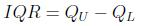
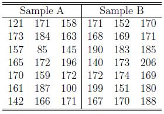
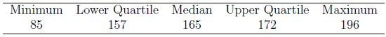
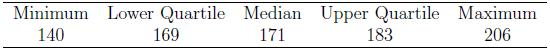
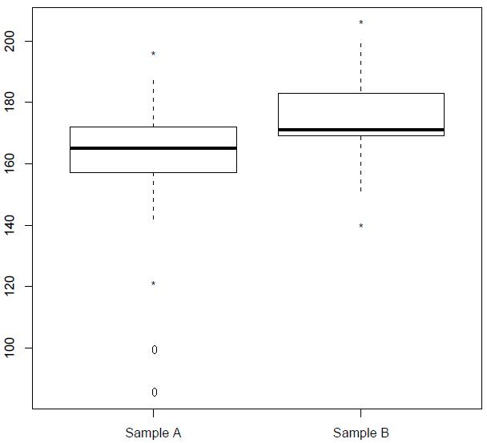

Box Plot
Lead Author(s): Erin Dienes
Definition of Box Plot
A box plot, also known as a box and whiskers plot, is a graphical method that is based on the quartiles of a data set. Quartiles are values that partition the data set into four groups, each containing 25% of the measurements. The lower quartile is the 25th percentile, the middle quartile is the 50th percentile (the median), and the upper quartile is the 75th percentile. A box plot is based on the interquartile range (IQR), meaning the distance between the lower and upper quartiles. Thus the IQR is calculated by

Constructing a Box Plot
There are three elements of a box plot:
- A rectangle (the box) is drawn with the ends (the hinges) drawn at the lower and upper quartiles. The median of the data is shown in the box, typically by a line.
- The points at distances 1.5 (IQR) from each hinges mark are the inner fences of the data set. Lines (the whiskers) are drawn from each hinge to the most extreme measurement within the inner fence.
- A second pair of fences, the outer fences, appear at a distance of 3(IQR) from the hinges. One symbol (usually "*") is used to represent measurements falling between the inner and outer fences, and another (usually "0") is used to represent measurements that lie beyond the outer fences. Outer fences are not shown unless one or more measurements lie beyond them.
Interpreting a Box Plot
To interpret a box plot we consider several things.
- Examine the length of the box. The IQR is a measure of the sample's variability and is especially useful for comparing two or more samples.
- Consider the spread between each quartile and the median. If one of these distances is much larger than the other then this indicates that the distribution is probably skewed in the direction of the larger distance.
- Visually compare the lengths of the whiskers. If one is clearly longer, the distribution of the data is probably skewed in the direction of the longer whisker.
- Analyze any measurements that lie beyond the fences. Less than 5% of the data should fall beyond the inner fences, even for very skewed distributions. Measurements beyond the outer fences are probably outliers.
Example of a Box Plot
Consider the following two sample data sets:

For Sample A we get the following summary:

From the above information we can calculate the IQR and the fences for Sample A:
IQR = 172 - 157 = 15
Then 1.5 (IQR) = 1.5 (15) = 22.5
Lower Inner Fence = 157 - 22.5 = 134.5
Upper Inner Fence = 172 + 22.5 = 194.5
We can see that the measurements 85, 100, 121, and 196 are outside of the inner fences.
And 3 (IQR) = 3 (15) = 45
Lower Outer Fence = 157 - 45 = 112
Upper Outer Fence = 172 + 45 = 217
We can see that the measurements 85 and 100 are outside of the outer fences.
For Sample B we get the following summary:

From the above information we can calculate the IQR and the fences for Sample B:
IQR = 183 - 169 = 14
Then 1.5 (IQR) = 1.5 (14) = 21
Lower Inner Fence = 169 - 21 = 148
Upper Inner Fence = 183 + 21 = 204
We can see that the measurements 140 and 206 are outside of the inner fences.
And 3 (IQR) = 3 (14) = 42
Lower Outer Fence = 169 - 42 = 127
Upper Outer Fence = 183 + 42 = 225
We can see that none of the measurements are outside of the outer fences.
A box plot for each of the above samples is provided below. The measurements in between the inner and outer fences are labeled with a " * ", and the measurements outside of the outer fences are labeled with a " 0 ".

From these two box plots we see that the variability in each sample, based on the IQR, is very similar. From a visual inspection of the box plot of the data in Sample A, we see that the distance from the lower and upper quartiles to the median are very similar which suggests that the underlying distribution is rather symmetric. This conclusion is also supported by the approximately equal lengths of the whiskers. From the box plot of the data in Sample B, we see that the distance from the lower quartile to the median is significantly smaller than the distance from the upper quartile to the median. This suggests that the underlying distribution is skewed to the right. Since the whiskers are approximately equal in length, we may conclude that the skew is very slight.
Also in Sample A there appears to be four possible outliers (two extreme outliers) and in Sample B there appears to be two possible outliers. Further analysis of these points is needed.
-- ErinEsp - 12 Apr 2010